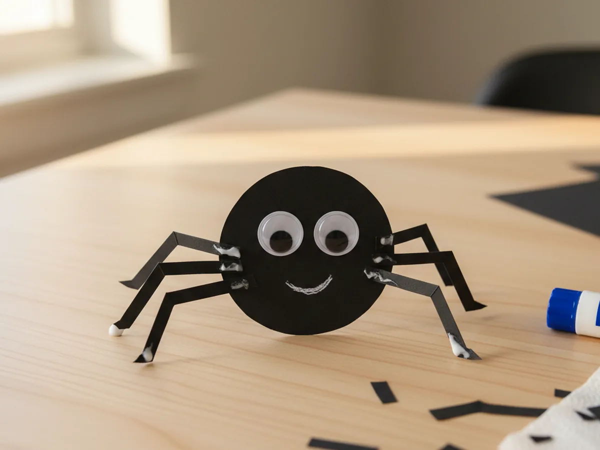
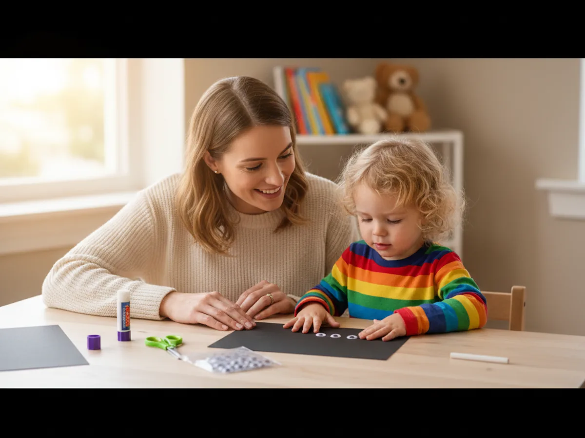
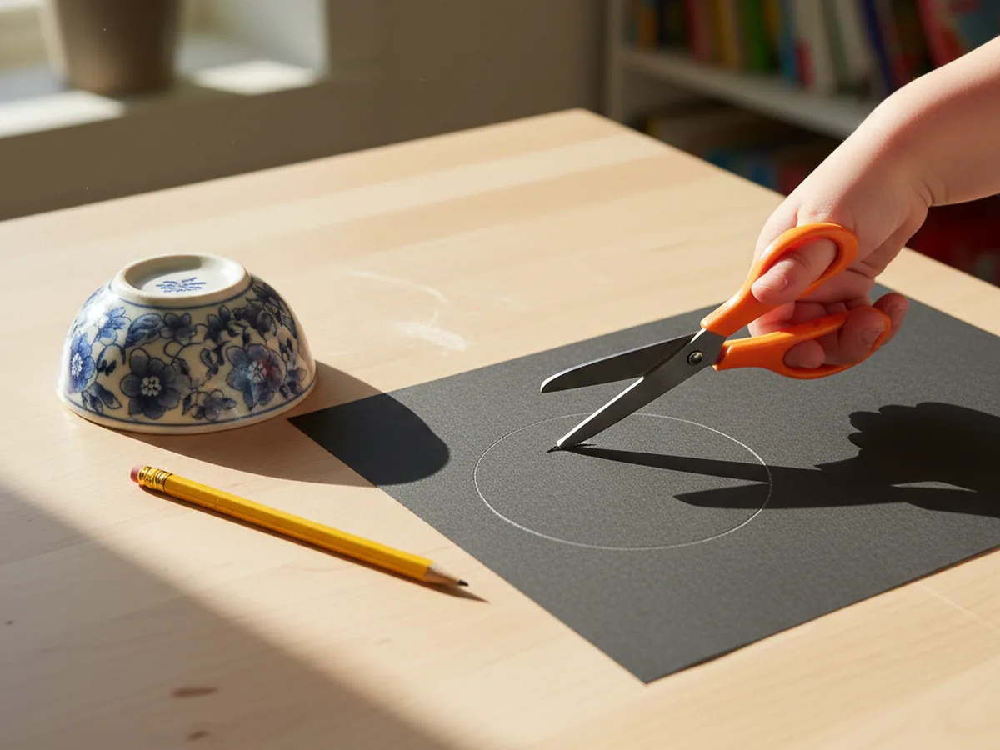
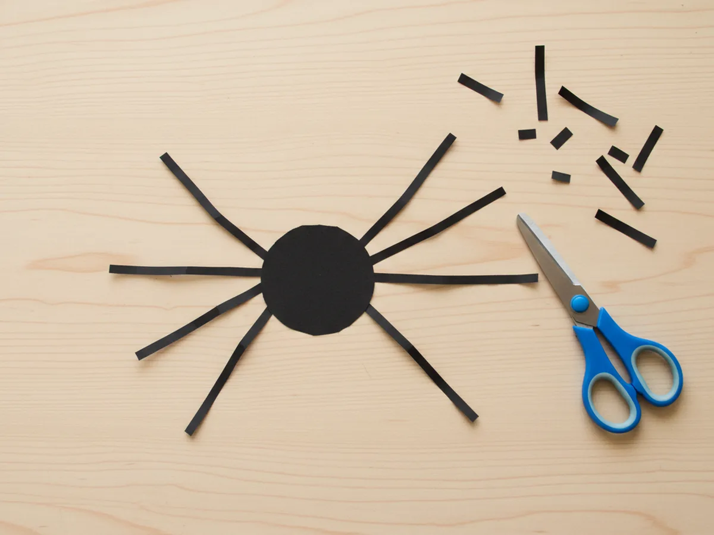
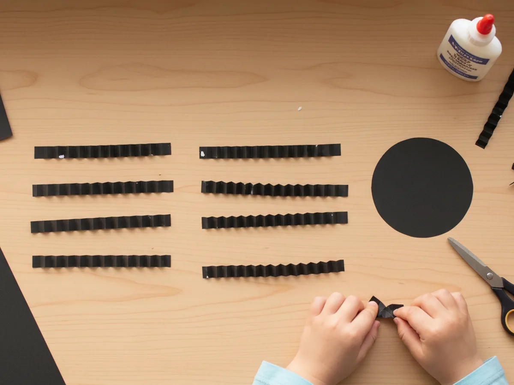
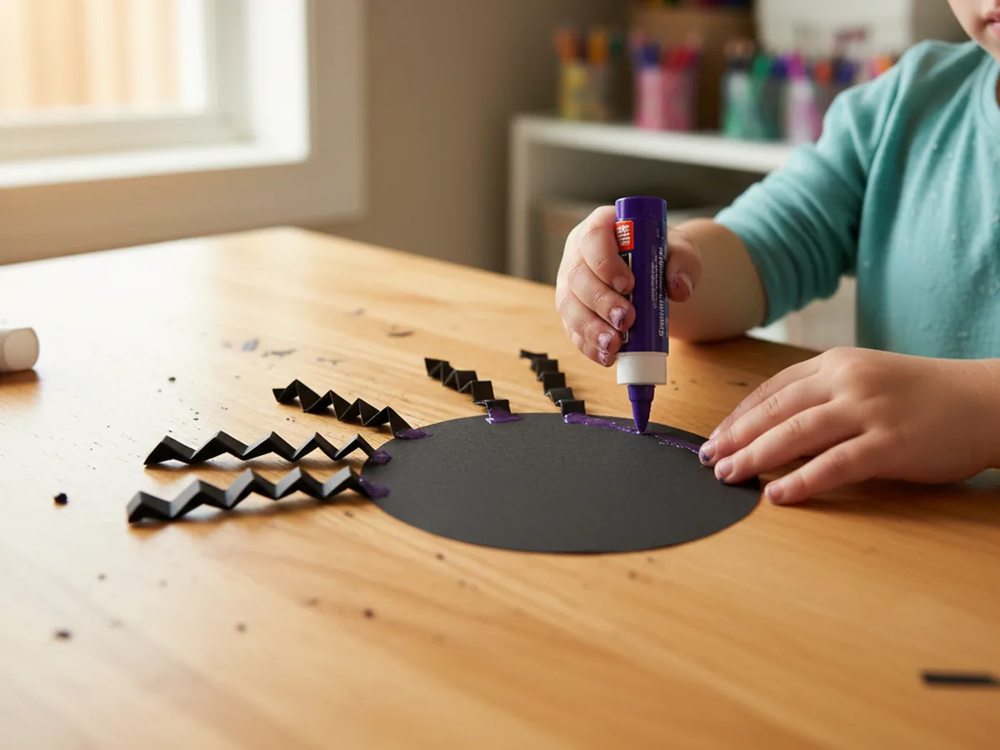
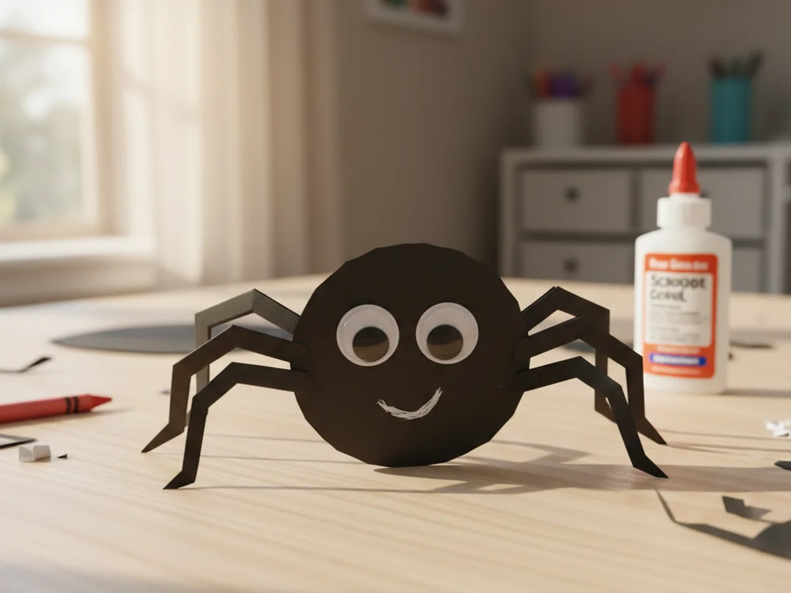

If your little one is fascinated by everything wiggly and creepy crawly (in the best way), this paper craft spider is going to be a winner. It's quick, low-mess, and the finished result is so cute you'll want to keep it taped to the kitchen wall through Halloween. Grab some black paper and a glue stick, and let's make a friendly little eight-legged buddy together. 🕷️
Why Kids Love This Craft
There's something about turning a flat piece of paper into a wiggly little creature that absolutely lights kids up. This cute spider paper craft gives them the chance to fold, cut, and glue, all in one short activity, and they end up with something they can play with afterward. The accordion-folded legs bounce a little when you pick the spider up, which always gets a giggle.
It's also a great fine motor practice without feeling like a "lesson." Folding the leg strips builds finger control, snipping the body teaches scissor confidence, and placing the googly eyes works on hand-eye coordination. All of that, wrapped up in something that looks like fun.
What I love most is how forgiving this easy paper spider craft is. The legs don't need to be even. The circle doesn't need to be perfect. The eyes can be wherever your child sticks them, and honestly, that's part of the charm. Every spider ends up with its own personality, and your child gets to feel like an artist from start to finish.

What You'll Need
Here's everything you'll need to make this paper craft spider. I always like to lay the supplies out before we start, so little hands aren't stuck waiting while I dig through the craft drawer.
- Black construction paper, one sheet is plenty for the body and legs.
- Self-adhesive googly eyes, 10mm size, two per spider, peel-and-stick.
- Elmer's washable purple glue sticks, the disappearing color is helpful for kids.
- Fiskars blunt-tip kid scissors, sized for ages 4 to 7 (pre-cut for younger kids).
- Crayola white crayons, perfect for drawing a sweet little smile on dark paper.
- A small round bowl or cup, to trace a clean circle for the spider body.
- A pencil, for tracing the circle outline.
Step-by-Step Instructions
Follow along with this simple paper craft spider step by step. I promise it comes together quickly, and each step is doable for a preschooler with a tiny bit of help from you.
Step 1: Cut Out the Spider Body
Start by tracing a circle on a sheet of black construction paper. A small bowl, a roll of tape, or even the bottom of a kid's cup works perfectly as a guide. Aim for a circle around three to four inches across so it's not too big and not too tiny. Then help your child cut along the line to release the spider body.
If your child is brand new to scissors, you can pre-cut the circle and let them feel like the cutting helper instead of doing it solo. Either way, the goal is just one chunky black paper circle. It does not need to be perfectly round, lumpy spiders are charming spiders.

Step 2: Cut Eight Strips for the Legs
Next, cut eight thin strips of black paper for the legs. Each strip should be about three inches long and a little less than half an inch wide. They don't need to be identical, real spiders aren't perfectly symmetrical anyway, and slightly mismatched legs only add character.
For toddlers, this is the perfect step to prep ahead of time. Cut the strips before sitting down so your child can move straight into the fun folding part. For older kids, drawing pencil lines on the paper first gives them a clear guide to follow with the scissors.

Step 3: Accordion-Fold Each Leg
Now for the magical part. Take one leg strip and fold it back and forth like a tiny accordion or paper fan. Just keep flipping the strip in the opposite direction every half inch or so. Crease each fold firmly with a fingernail. Repeat with all eight strips.
This is honestly the most loved step in our house. There is something so satisfying about watching a flat strip turn into a springy little zigzag. Show your child the first fold, then let them try the rest. They will figure out the rhythm pretty quickly, and any uneven folds will only make the spider legs look more wobbly and fun.

Step 4: Glue the Legs to the Body
Flip the black circle over so the back is facing up. Help your child run a glue stick along one end of each accordion-folded leg, then press it onto the back edge of the body. Glue four legs along one side and four on the other, fanning them out a little so the spider looks like it's mid-walk.
Don't worry if the legs are not perfectly spaced. A wonky leg here and there only makes the spider look more lifelike. Once all eight legs are stuck on, gently flip the spider face-up. The legs should peek out around the edges of the body. Cute, right?

Step 5: Add the Eyes and a Sweet Smile
Time to give your spider some personality! Peel the backing off two self-adhesive googly eyes and let your child press them onto the front of the body. They can stack them, space them out, or angle them however they like. Then grab a white crayon and draw a tiny curved smile underneath the eyes.
If you want extra cuteness, add little white dots for cheeks, or two tiny fang shapes if your child is going for a slightly spookier look. This is the moment when a piece of paper officially becomes a spider, and the look on your child's face is honestly the whole reason we craft. 🥰

Variations to Try
Hanging Spider Mobile: Tape a piece of black thread or yarn to the back of the spider before adding the legs, then hang it from a doorway, a curtain rod, or a houseplant. Make a few in different sizes and you have an instant Halloween decoration that feels playful instead of scary.
Spider on a Web: Use a sheet of black paper as a backdrop and let your child draw a simple white chalk or crayon spider web on it before gluing the spider in the middle. Concentric circles and a few crisscross lines is all it takes, and the contrast looks gorgeous.
Glittery Birthday Spider: Swap the white crayon smile for a tiny paper party hat and add some glitter glue dots to the body. This silly birthday spider is great for spider-themed parties or for older siblings who want a fancier look without doing anything more complicated.
More Crafts You'll Love
If your little one had fun with this paper craft spider, they'll love these other paper Halloween projects too:
Final Thoughts
This paper craft spider hits the sweet spot of quick, low-mess, and seriously cute. It's the kind of project you can pull together on a rainy afternoon, after a school day, or right before Halloween, and it always leaves your kid grinning at their wiggly new friend. Even better, all of the supplies are easy to keep on hand for the next round of paper craft fun.
If you make one with your little crew, snap a photo of your finished spider and pin this tutorial so other moms can find it too. Happy crafting, friend! 💛